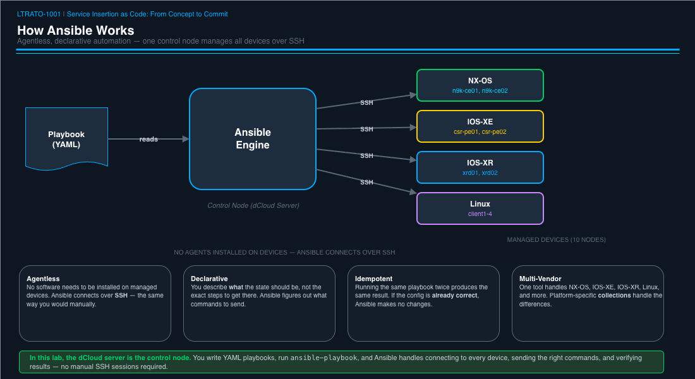
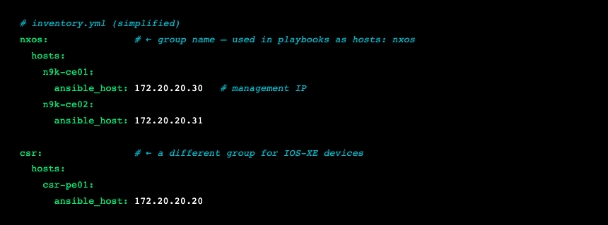
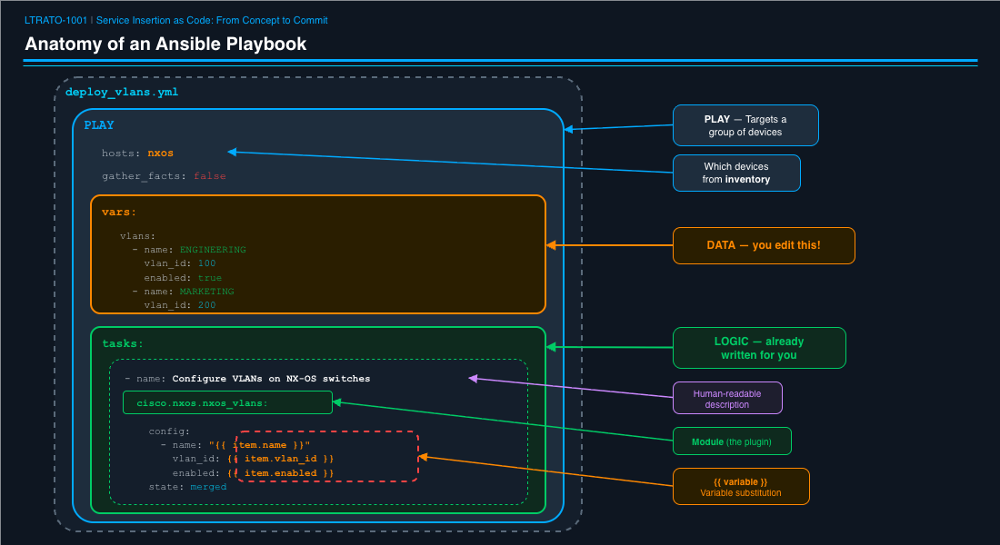
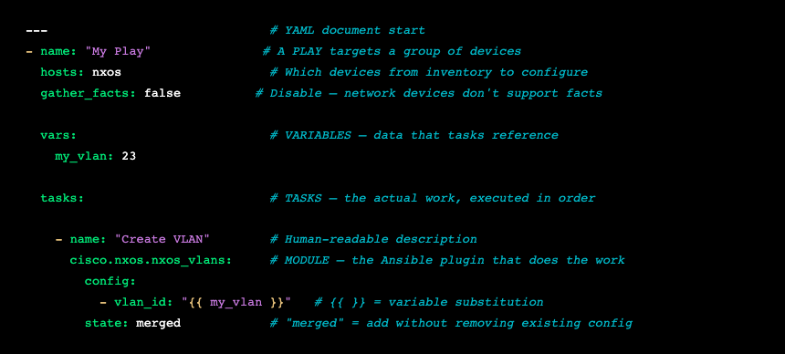
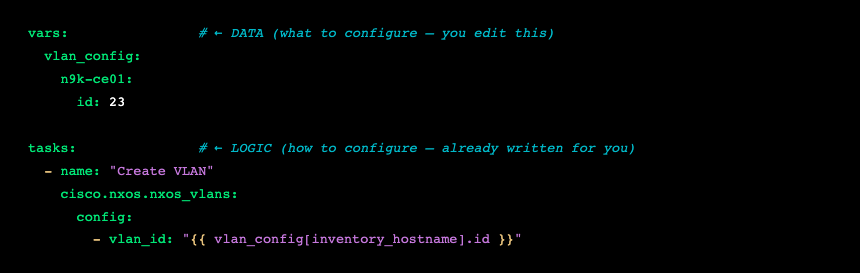
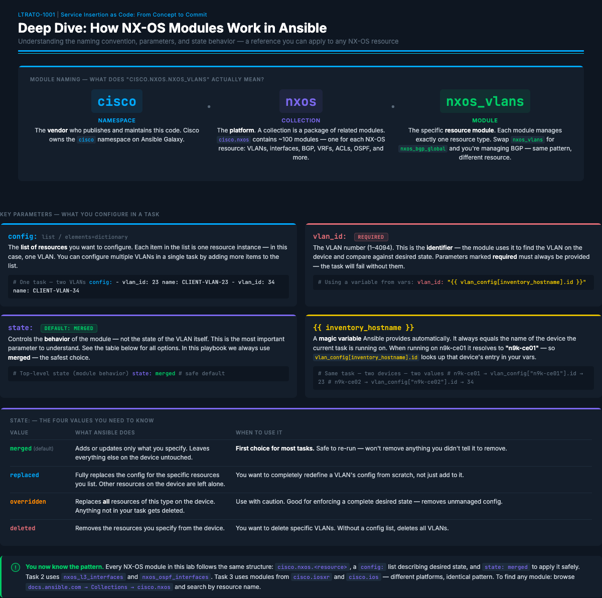

Ansible Primer
Ansible Quick Primer¶
If you're new to Ansible, take 5 minutes to read this section. Understanding these concepts will make the rest of the lab much more intuitive.
What is Ansible?¶

Ansible is an open-source automation tool that manages infrastructure through code instead of manual CLI sessions. Instead of SSH'ing into 10 devices and typing commands one by one, you write a YAML file describing the desired state, and Ansible handles the rest — connecting, authenticating, sending commands, and verifying results.
Key properties: - Agentless — No software needs to be installed on the managed devices. Ansible connects over SSH (same as you would manually). - Declarative — You describe what the state should be, not the exact steps to get there. Ansible figures out what commands to send. - Idempotent — Running the same playbook twice produces the same result. If the config is already correct, Ansible makes no changes. - Multi-vendor — One tool handles NX-OS, IOS-XE, IOS-XR, Linux, and more. Platform-specific "collections" (plugins) handle the differences.
What is an Inventory?¶
Before Ansible can connect to anything, it needs to know what devices exist and how to reach them. That list is the inventory — a file (in this lab, inventory.yml) that defines every device, its IP address, and which group it belongs to.

Groups let you target a subset of devices in a play. When a playbook says hosts: nxos, Ansible runs that play on every host in the nxos group — in this lab, n9k-ce01 and n9k-ce02. Each group can also carry shared variables like ansible_network_os and connection settings so you don't repeat them per device.
In this lab the inventory is already set up for you. You won't need to edit it — just know that
hosts: nxosin a playbook means "run on both Nexus switches."
Playbook Structure¶

A playbook is a YAML file containing one or more plays. Each play targets a group of devices and runs a series of tasks:

The flow: Ansible reads the playbook → connects to each host in hosts: →
runs each task in order → reports results. If a task fails, Ansible stops on
that host (but continues on others).
Variables: Separating Data from Logic¶
The most important concept in this lab is variable separation. Look at the playbook structure:

The vars section is the data — the specific values for your network.
The tasks section is the logic — the Ansible modules and their structure.
In this lab, you edit the data (vars), not the logic (tasks). This mirrors
real-world IaC practice: engineers change variables in a data file, and the
automation logic stays the same across environments.
The expression {{ vlan_config[inventory_hostname].id }} works in two steps. First, inventory_hostname is a magic variable Ansible sets automatically at runtime — it equals the name of the device currently being configured (e.g., n9k-ce01). Second, that name is used as a dictionary key to look up the right entry in vlan_config. This is why the keys in the vars block are written to exactly match the hostnames in your inventory — n9k-ce01 in vars must match n9k-ce01 in inventory.yml. When Ansible runs on n9k-ce01, inventory_hostname resolves to "n9k-ce01", so vlan_config["n9k-ce01"].id returns 23. When it runs on n9k-ce02, it returns whatever you set for that switch.
Automation Insight: This data/logic split is the pattern behind every scalable automation system. Think of it this way: the playbook is a template you write once. The variables are a spreadsheet your team fills in. When a new site comes online, nobody touches the automation code — they just add a row to the data.
Key Concepts Reference¶
| Concept | What It Means |
|---|---|
| Play | A block that targets a group of hosts and runs tasks on them |
| Task | A single action (create VLAN, push CLI config, run a command) |
| Module | The plugin that performs the action (nxos_vlans, ios_config, etc.) |
| Variable | Data referenced with {{ }} — keeps config values separate from logic |
| Collection | A package of modules for a specific platform (e.g., cisco.nxos) |
hosts: |
Which inventory group to target (e.g., nxos, csr, xrd, linux) |
gather_facts: false |
Ansible can auto-discover server details ("facts") before running tasks. Network devices don't support this — always set it to false for network plays |
state: merged |
Add/update config without removing anything that already exists |
register: |
Save command output into a variable for later display or inspection |
loop: |
Run the same task multiple times, once per item in a list |
when: |
Only run this task if a condition is true |
| Idempotency | Running the same playbook twice produces the same result — no duplicate config |
How to Edit Playbooks¶
In the real world, playbooks are typically edited in a desktop editor like VS Code, PyCharm, or whatever your team uses. In this lab, you will edit files directly in the terminal — the dCloud environment is a remote Linux server, so a terminal editor is the right tool.
You can use any terminal editor you prefer — nano, vi, or vim. All examples in this lab use nano (recommended if you're unsure, as it shows key shortcuts at the bottom of the screen):
To save and exit nano: Ctrl+O → Enter to save, then Ctrl+X to exit.
YAML is whitespace-sensitive. Use spaces (not tabs), and make sure your indentation matches the surrounding lines. If your playbook fails with a syntax error, check indentation first. A common mistake is using 3 spaces instead of 2, or mixing tabs and spaces.
Automation Insight: The data/logic split you see in this lab mirrors how real teams work. A senior engineer writes the playbook logic and tests it once. A junior engineer or NOC operator fills in the variables for each deployment. If you can read a table and type a number, you can deploy infrastructure — that's how automation democratizes network operations.
Cisco Resource Modules¶
Cisco publishes resource modules for NX-OS, IOS-XE, IOS-XR, and more — all following the same naming convention, parameter structure, and state: behavior. In Task 1 we use the NX-OS VLAN module (cisco.nxos.nxos_vlans) as a concrete example, but everything you learn here applies equally to cisco.ios.ios_vlans, cisco.iosxr.iosxr_bgp_global, and any other Cisco resource module.
These modules are distributed as collections — think of a collection as an app store package for Ansible. Cisco publishes its collections on Ansible Galaxy (galaxy.ansible.com), and they are pre-installed in this lab. The collection name cisco.nxos means: published by Cisco, for NX-OS. It contains ~100 modules — one per resource type (VLANs, interfaces, BGP, ACLs, OSPF, and more). Understanding one module's naming and behavior means you can immediately read any other module in the collection.

Module Naming — What does cisco.nxos.nxos_vlans actually mean?¶
| Part | Value | What it is |
|---|---|---|
| Namespace | cisco |
The vendor who publishes and maintains the code on Ansible Galaxy |
| Collection | nxos |
The platform. cisco.nxos contains ~100 modules — one per NX-OS resource: VLANs, interfaces, BGP, VRFs, ACLs, OSPF, and more |
| Module | nxos_vlans |
The specific resource module. Swap it for nxos_bgp_global and you're managing BGP — same pattern, different resource |
The state: Values You Need to Know¶
Every NX-OS resource module accepts a top-level state: parameter that controls what Ansible does, not the state of the resource itself.
| Value | What Ansible does | When to use it |
|---|---|---|
merged (default) |
Adds or updates only what you specify. Leaves everything else on the device untouched. | First choice for most tasks. Safe to re-run — won't remove anything you didn't tell it to. |
replaced |
Fully replaces the config for the specific resources you list. Other resources on the device are left alone. | You want to completely redefine a resource's config from scratch. |
overridden |
Replaces all resources of this type on the device. Anything not in your task gets deleted. | Enforcing a complete desired state — removes unmanaged config. Use with caution. |
deleted |
Removes the resources you specify. Without a config: list, deletes all resources of this type. |
You want to delete specific resources. |
config.statevs. top-levelstate:— don't mix these up. Some modules have aconfig.statefield (e.g.,nxos_vlanshasconfig.state: active/suspendto control whether a VLAN is operational). That is completely separate from the top-levelstate:which controls Ansible's behavior. If you see both in a module's parameters, they do different things.
Finding Documentation for Any Module¶
The playbooks in this lab were written for you — but if you ever want to understand a module more deeply, add a new resource, or build your own playbook from scratch, the Ansible documentation is where you start.
1. Go to the cisco.nxos collection index:
https://docs.ansible.com/projects/ansible/latest/collections/cisco/nxos/
This page lists every module in the collection. Scroll down to the Modules section to browse — each one is a clickable link to its full documentation page.
2. Click the module you want — for example nxos_vlans:
https://docs.ansible.com/projects/ansible/latest/collections/cisco/nxos/nxos_vlans_module.html
Every module page has the same structure. Read in this order:
- Synopsis — one sentence describing what the module manages
- Parameters — everything you can configure, with types and defaults
- Examples — working YAML for each
state:value — the fastest way to understand what the module actually does
3. Read the Parameters table. Here's what it looks like for nxos_vlans as a worked example:
| Parameter | Type | Required | What it does |
|---|---|---|---|
config |
list | no | List of VLAN dictionaries — one item per VLAN you want to configure |
config.vlan_id |
integer | yes | The VLAN number (1–4094) — used to identify the VLAN on the device |
config.name |
string | no | Human-readable name for the VLAN |
config.state |
string | no | Operational state of the VLAN itself — active or suspend |
config.enabled |
boolean | no | Admin state — true = no shutdown, false = shutdown |
state |
string | no | Module behavior — merged (default), replaced, overridden, deleted |
4. The URL pattern works for every module in this lab:
| Module | Used in | Documentation URL |
|---|---|---|
nxos_vlans |
Task 1 | …/nxos_vlans_module.html |
nxos_interfaces |
Task 1 | …/nxos_interfaces_module.html |
nxos_l2_interfaces |
Task 1 | …/nxos_l2_interfaces_module.html |
nxos_l3_interfaces |
Task 2 | …/nxos_l3_interfaces_module.html |
nxos_ospf_interfaces |
Task 2 | …/nxos_ospf_interfaces_module.html |